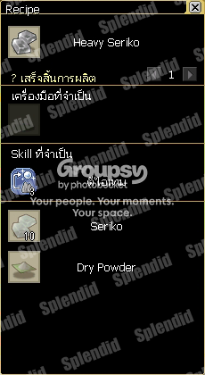

อีก 2 ปีกว่า เค้าจะปิดเหรอคับ
แล้วตอนนี้เกมมีกี่ปีแล้วอ่า
ถ้าอีก 2 ปีปิดผมไม่เล่นแล้วนะ
จะเลิกเดี๋ยวนี้เลย
เลิกเดี๋ยวนี้เลยน้า
http://eco.froztic.in.th/archive/ecofanclub/
http://eco.froztic.in.th/archive/ecofanclub/viewtopic.php?f=27&t=54621
porpulation เขียน::second09:
อีก 2 ปีกว่า เค้าจะปิดเหรอคับ
แล้วตอนนี้เกมมีกี่ปีแล้วอ่า
ถ้าอีก 2 ปีปิดผมไม่เล่นแล้วนะ
จะเลิกเดี๋ยวนี้เลย
เลิกเดี๋ยวนี้เลยน้า


gooligo เขียน:คือผมมีฟายอิ้งการ์เด้นแต่ยังบินไม่ได้ครับ
ถ้าเกิดผมซื้อไอพ่นสำเร็จรูปมาจะต้องทำอย่างไรต่อครับ
วิธีประกอบจะทำตามขั้นตอนไหนครับ
ปล.ผมยังไม่ได้ลงทะเบียนที่ทองก้าและก็ไม่ได้รับชิ้นส่วนฟรีด้วยครับ
คิคิbomb038 เขียน:เฮเว่นซี่ลิโกะหาจากไหนครับ เควสพ่อค้า 59 อ่ะ
westlykung ครับ ตรง ลาย เซ็น พ.พ. นี่หมายความว่าไงหรือครับ


 (ไม่ได้มีความเนียนเลยนะครับเนี่ย
(ไม่ได้มีความเนียนเลยนะครับเนี่ย  )
)